리더스 키워드·블로그 SEO 자동화
글을 계속 쓰는데도
성과가 쌓이지 않는다면
문제는 글쓰기 실력이 아니라, 키워드 찾기부터 발행 이후 연결까지 매번 따로 처리되는 운영 흐름일 수 있습니다.
블로그 운영이 막히는 순간
키워드는 따로 찾고
글 작성과 이미지는 따로 준비하고
CTA와 내부링크는 발행 후 다시 정리하고
네이버·블로그스팟·워드프레스는 각각 따로 움직입니다
키워드
글 생성
이미지
CTA
예약 발행
내부링크
공개 글
키워드 발굴 · 글 생성 · 이미지 · CTA · 예약 발행 · 거미줄 구조를 한 흐름으로
단순 자동글 생성기가 아닙니다
키워드에서 발행까지
블로그 운영 흐름을 정리합니다
리더스는 LEWORD 키워드 분석, 네이버 블로그 자동화, 블로그스팟/워드프레스 발행 보조를 하나의 운영 패키지로 묶었습니다.
01 키워드 발굴
02 글 역할 분리
03 본문·이미지 생성
04 CTA·링크 구성
05 발행 흐름 관리
실제 앱 화면으로 보여드립니다
LEWORD·네이버자동화·블로그스팟/WP를
각각 최신 화면으로 구성했습니다
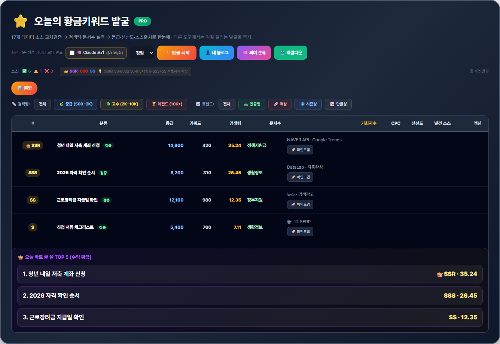
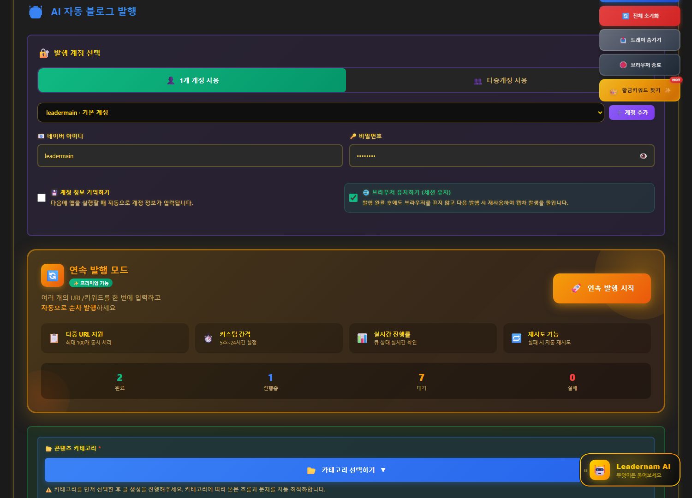

LEWORD 핵심 기능
지금 뜨는 키워드와
쓸 만한 글감을 먼저 찾습니다
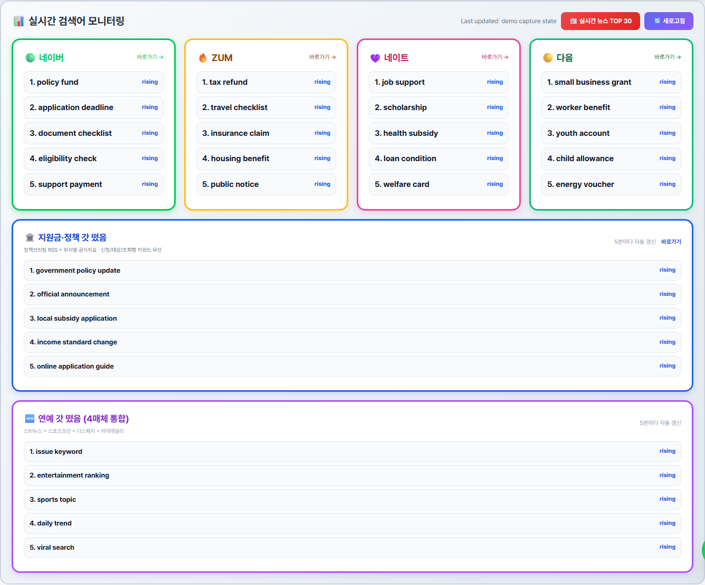
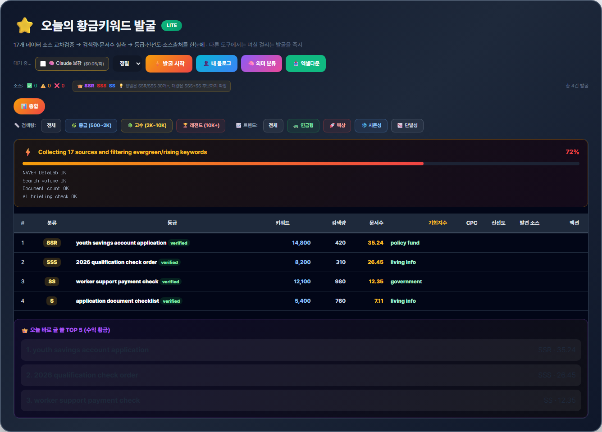
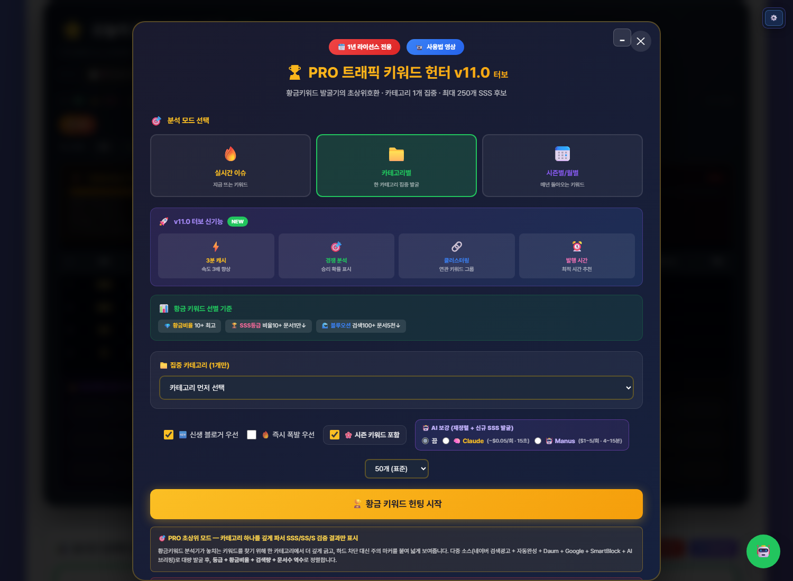
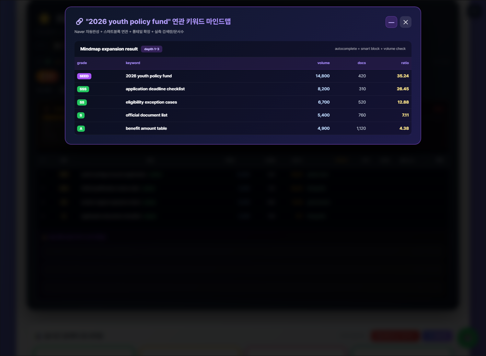
네이버 자동화 모드
대기열, 순차 발행, 이미지, 진행률까지
운영 화면을 분리했습니다
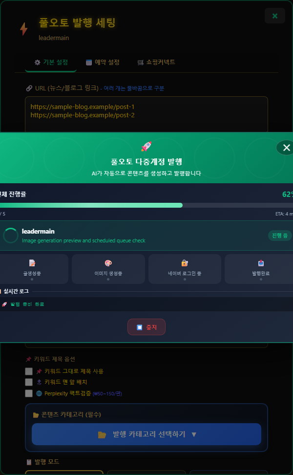
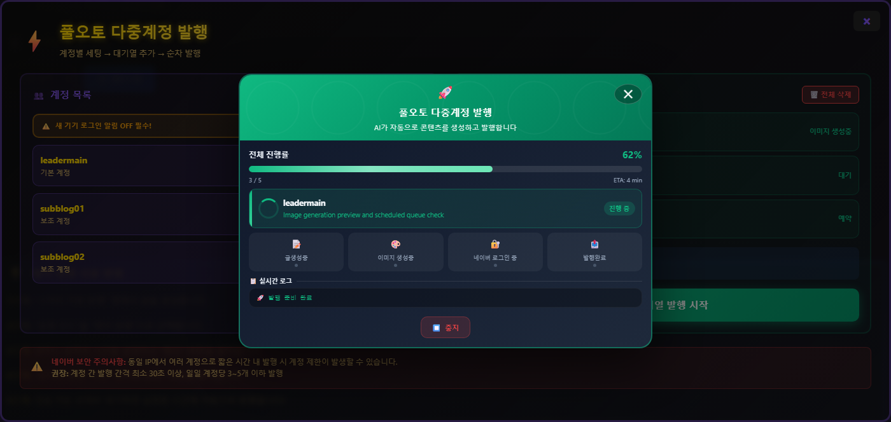
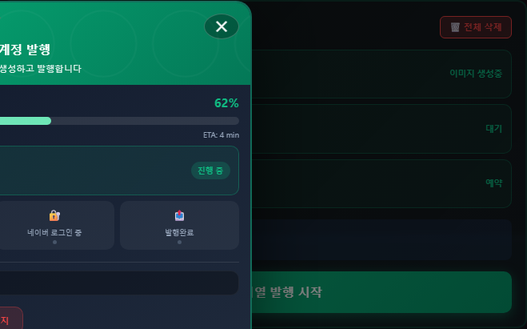
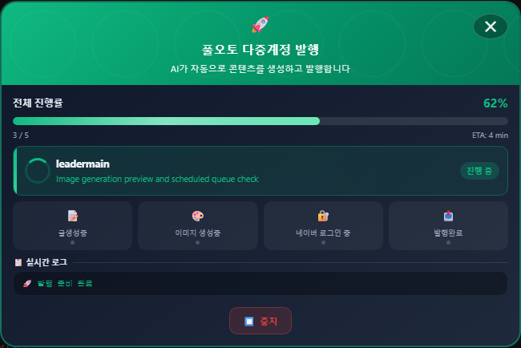
블로그스팟/WP·외부유입
공개 글과 보조 유입글까지
모바일 친화형 구조로 만듭니다
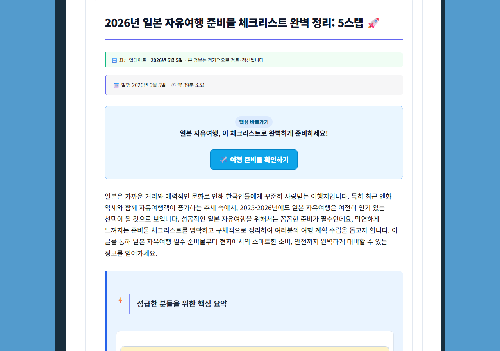
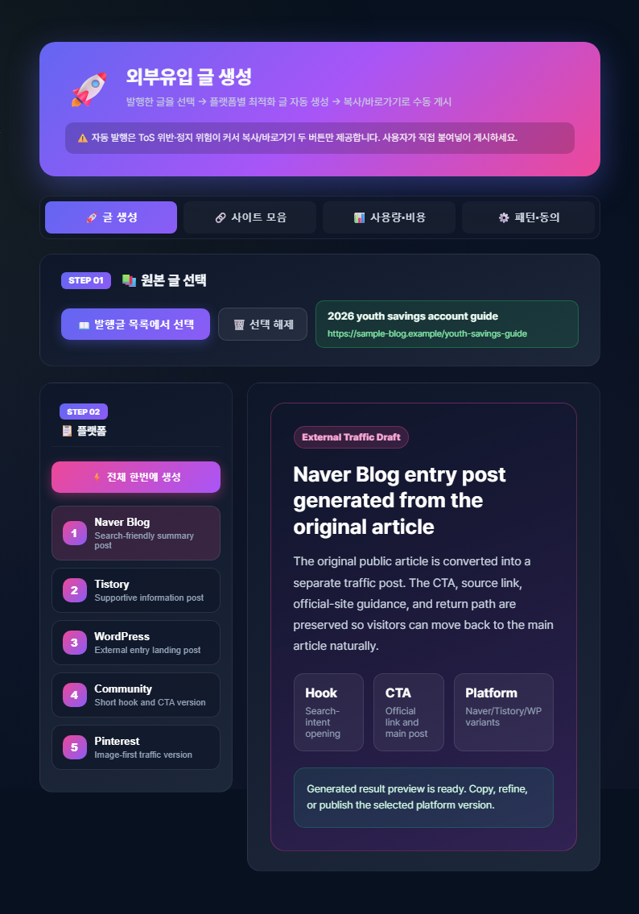
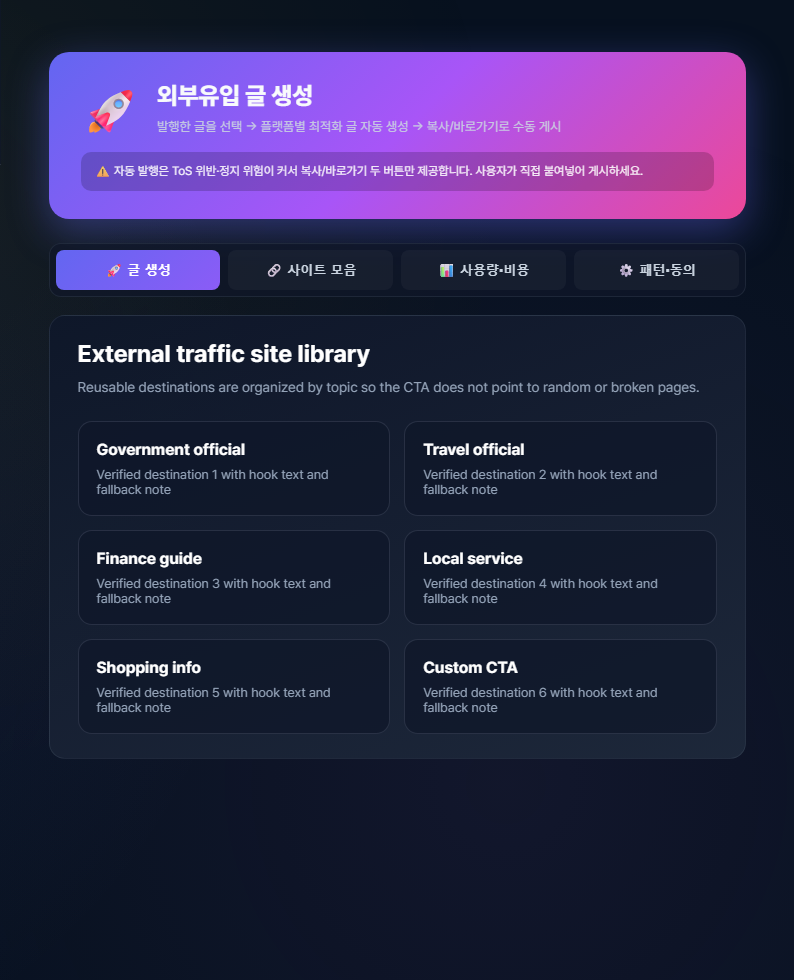
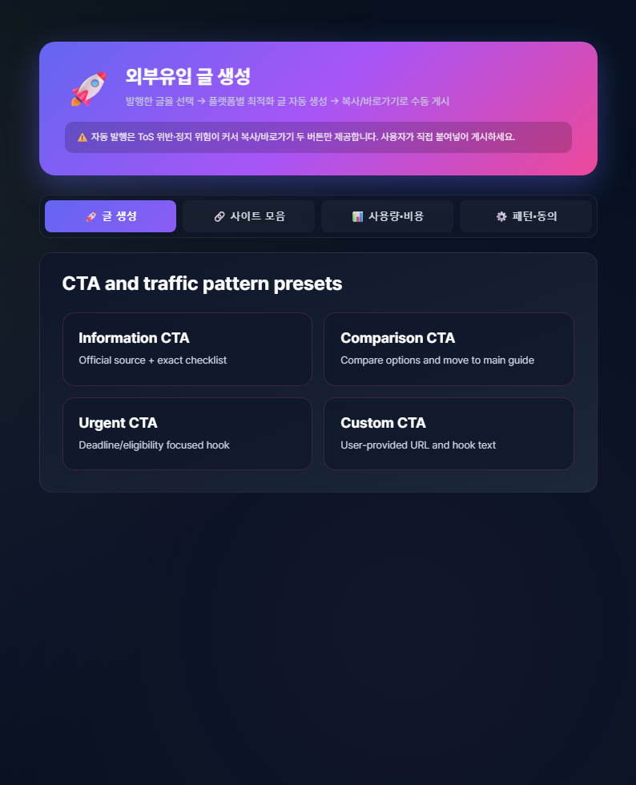
거미줄 내부링크 구조
글을 따로 쌓지 않고
종합글과 개별글을 연결합니다
개별 글과 종합글, 본문 CTA, 관련글 카드가 이어질 때 방문자는 다음 글로 자연스럽게 이동합니다.

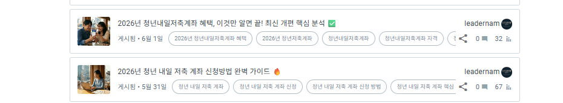
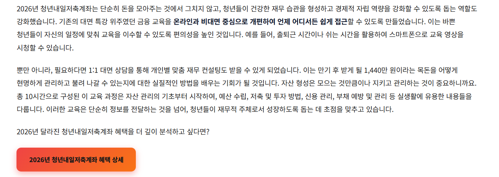
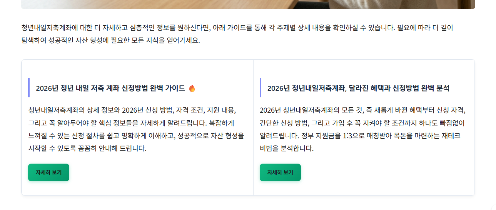
이런 분께 추천드립니다
반복 작업은 줄이고
운영 방향에 더 집중하세요
1. 키워드 후보 찾기
2. 글 역할 정하기
3. 본문·이미지·CTA 생성
4. 대기열 등록
5. 종합글·내부링크 연결
핵심은 글을 무작정 많이 찍어내는 것이 아니라, 키워드에서 발행까지 이어지는 운영 흐름을 정리하는 것입니다.
올인원 패키지 안내
LEWORD·네이버 자동화·Blogspot/WP
모두 포함된 구성입니다
구매 전 꼭 확인해 주세요
본 프로그램은 블로그 콘텐츠 작성과 운영을 보조하는 자동화 도구입니다. 검색 노출, 수익, 애드센스 승인, 특정 순위 달성은 사용자의 운영 방식, 블로그 상태, 콘텐츠 품질, 검색엔진 정책에 따라 달라질 수 있으며 보장하지 않습니다.
일부 기능은 API 키, 계정 연동, 플랫폼 설정이 필요할 수 있으며 PC 환경과 네트워크 상태에 따라 작동 방식이 달라질 수 있습니다.
Q. 초보자도 사용 가능한가요? 가이드와 세팅 안내를 제공합니다.
Q. 커스텀 CTA가 가능한가요? 원하는 링크와 후킹 문구를 넣을 수 있습니다.
Q. 완전 자동인가요? 플랫폼/계정 상태에 따라 사용자 확인이 필요할 수 있습니다.
키워드 찾기부터 발행, 내부링크, 외부유입 글 구성까지 한 번에 정리하세요.